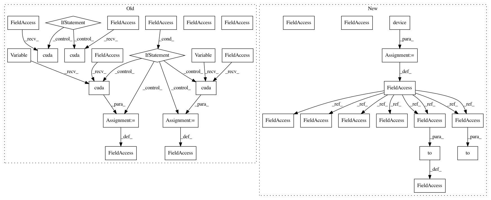

1e9c3ee592be5e11dcce932a73009488d6f85474,ch17/02_imag.py,,,#,78
Before Change
net = common.AtariA2C(envs[0].observation_space.shape, envs[0].action_space.n)
net_em = i2a.EnvironmentModel(envs[0].observation_space.shape, envs[0].action_space.n)
net.load_state_dict(torch.load(args.model, map_location=lambda storage, loc: storage))
if args.cuda:
net.cuda()
net_em.cuda()
print(net_em)
optimizer = optim.Adam(net_em.parameters(), lr=LEARNING_RATE)
step_idx = 0
best_loss = np.inf
with ptan.common.utils.TBMeanTracker(writer, batch_size=100) as tb_tracker:
for mb_obs, mb_obs_next, mb_actions, mb_rewards, done_rewards, done_steps in iterate_batches(envs, net, cuda=args.cuda):
if len(done_rewards) > 0:
m_reward = np.mean(done_rewards)
m_steps = np.mean(done_steps)
print("%d: done %d episodes, mean reward=%.2f, steps=%.2f" % (
step_idx, len(done_rewards), m_reward, m_steps))
tb_tracker.track("total_reward", m_reward, step_idx)
tb_tracker.track("total_steps", m_steps, step_idx)
obs_v = Variable(torch.from_numpy(mb_obs))
obs_next_v = Variable(torch.from_numpy(mb_obs_next))
actions_t = torch.LongTensor(mb_actions.tolist())
rewards_v = Variable(torch.from_numpy(mb_rewards))
if args.cuda:
obs_v = obs_v.cuda()
actions_t = actions_t.cuda()
obs_next_v = obs_next_v.cuda()
rewards_v = rewards_v.cuda()
optimizer.zero_grad()
out_obs_next_v, out_reward_v = net_em(obs_v.float()/255, actions_t)
loss_obs_v = F.mse_loss(out_obs_next_v, obs_next_v)
loss_rew_v = F.mse_loss(out_reward_v, rewards_v)
After Change
parser.add_argument("-n", "--name", required=True, help="Name of the run")
parser.add_argument("-m", "--model", required=True, help="File with model to load")
args = parser.parse_args()
device = torch.device("cuda" if args.cuda else "cpu")
saves_path = os.path.join("saves", "02_env_" + args.name)
os.makedirs(saves_path, exist_ok=True)
envs = [common.make_env() for _ in range(NUM_ENVS)]
writer = SummaryWriter(comment="-02_env_" + args.name)
net = common.AtariA2C(envs[0].observation_space.shape, envs[0].action_space.n)
net_em = i2a.EnvironmentModel(envs[0].observation_space.shape, envs[0].action_space.n).to(device)
net.load_state_dict(torch.load(args.model, map_location=lambda storage, loc: storage))
net = net.to(device)
print(net_em)
optimizer = optim.Adam(net_em.parameters(), lr=LEARNING_RATE)
step_idx = 0
best_loss = np.inf
with ptan.common.utils.TBMeanTracker(writer, batch_size=100) as tb_tracker:
for mb_obs, mb_obs_next, mb_actions, mb_rewards, done_rewards, done_steps in iterate_batches(envs, net, device):
if len(done_rewards) > 0:
m_reward = np.mean(done_rewards)
m_steps = np.mean(done_steps)
print("%d: done %d episodes, mean reward=%.2f, steps=%.2f" % (
step_idx, len(done_rewards), m_reward, m_steps))
tb_tracker.track("total_reward", m_reward, step_idx)
tb_tracker.track("total_steps", m_steps, step_idx)
obs_v = torch.FloatTensor(mb_obs).to(device)
obs_next_v = torch.FloatTensor(mb_obs_next).to(device)
actions_t = torch.LongTensor(mb_actions.tolist()).to(device)
rewards_v = torch.FloatTensor(mb_rewards).to(device)
optimizer.zero_grad()
out_obs_next_v, out_reward_v = net_em(obs_v.float()/255, actions_t)
In pattern: SUPERPATTERN
Frequency: 3
Non-data size: 33
Instances
Project Name: PacktPublishing/Deep-Reinforcement-Learning-Hands-On
Commit Name: 1e9c3ee592be5e11dcce932a73009488d6f85474
Time: 2018-04-29
Author: max.lapan@gmail.com
File Name: ch17/02_imag.py
Class Name:
Method Name:
Project Name: PacktPublishing/Deep-Reinforcement-Learning-Hands-On
Commit Name: d5b0cd8e7960c247bb7c5b7c832358f8831780fb
Time: 2018-04-29
Author: max.lapan@gmail.com
File Name: ch15/03_train_trpo.py
Class Name:
Method Name:
Project Name: PacktPublishing/Deep-Reinforcement-Learning-Hands-On
Commit Name: cbcc3f315c653706ceded6ba42f222616322a3f2
Time: 2018-04-25
Author: max.lapan@gmail.com
File Name: ch03/03_atari_gan.py
Class Name:
Method Name:
Project Name: PacktPublishing/Deep-Reinforcement-Learning-Hands-On
Commit Name: 1e9c3ee592be5e11dcce932a73009488d6f85474
Time: 2018-04-29
Author: max.lapan@gmail.com
File Name: ch17/02_imag.py
Class Name:
Method Name: